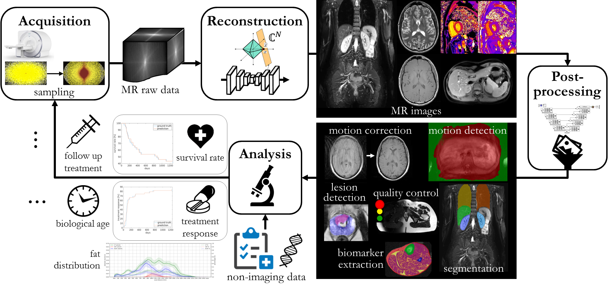

Teaching
Available Bachelor/research/Master thesis
Some of the topics are in collaboration with the Institute of Signal Processing and System Theory, University of Stuttgart and the Max Planck Institute for Intelligent Systems, Empirical Inference, Tübingen.The following section gives an overview of the potential topics.
Overview: AI-assisted data processing

×

The inclusion of artifical intelligence (AI) into medical data processing can help to improve performance by (but not limited to) increasing precision, boosting quality of service, easing processing and reducing computational times.
It enables to develop patient-centered workflows with personalized treatments that include: data processing from multiple imaging modalities acquired with multi-parametric imaging sequences, advanced reconstruction, post-processing and anylsis techniques.
In acquisition step:
- sequence development for multi-parametric and motion-resolved MRI
- patient-adaptive sampling mask optimization including online feedback according to movement cycle, SNR optimal sampling
- monitor motion state by external sensors (Microsoft Kinect camera, respiratory belt, ...) to match them to a motion model
- reconstruct motion-resolved image: Deep-learning based Compressed Sensing reconstruction with included motion estimation
- retrieve non-rigid deformations: Deep-learning based image registration or motion correction
- map motion state to external surrogate signal (sensor fusion)
- framework development for Gadgetron
- convolutional neural networks for MR image artifact localization and quantification
- Generative adversarial networks(GANs)for MR motion correction
- Semantic segmentation of organs and tissues
- Automatic quality control measures
- Biomarker feature extraction
- Framework development for NORA browser
- Treatment response predicition
- Inclusion of non-imaging data
- Biological age estimation
Proposed topics
The proposed topics here are a selection of the current research projects. If you are interested in any other topic, please contact one of the employees.Motion correction
Contact: ;
×

Patient, respiratory and cardiac movements produce motion artefacts in the final image which reduce the quality and impair reliable diagnosis.
The task is to accurately resolve, detect and correct the movements in acquisition, reconstruction and post-processing. High spatial-and temporal-resolved MR images need to beacquired over several respiratory and cardiac cycles under free movement conditions.
Motion-resolved images are then reconstructed under the consideration of a derived motion model and surrogate signals guiding the motion model. Motion models are estimated by image registrations. In a retrospective correction, images affected by motion can be further corrected.Applied methods include: Deep-learning based reconstruction, optical-flow and deep-learning image registration, Generative adversarial networks, sensor fusion
Image quality assessment and control
Contact: ;Applied methods include: feature extraction, classification, reinforcement learning, active learning, semi-supervised learning
Semantic segmentation
Contact: ;
×

Automatic segmentation of organs or tissue compartments in whole-body imaging is an important pre-requisite for any further analysis. The work deals with automatic detection of landmarks and segmentations for heart, abdominal organs (liver, spleen, pancreas, kidneys) and adiposse tissue compartments.
Different convolutional neural network architectures are investigated together with a smooth integration into clinical practice.
All thesis topics concern problem dependent aspects and appropriately selected algorithms:
- Classification: Bone and organ segmentation, tissue classification
- Regression: Anatomical structure localization
- Statistical analysis: Texture and shape analysis of specific regions and structures
- Extending and optimizing task dependent analysis pipelines
- Framework development: GUI, extending functionalities in Python
Adversarial learning
Contact:
×

The task of translating medical images between different domains has numerous useful applications. One example is the correction and restoration of artifact-corrupted images. Another potential application is the generation of novel image data between different modalities.
The work focuses on the development and refinement of medical image translation frameworks and their applications - specifically, GAN-based MR motion correction, GAN-based PET attenuation correction and GAN-based image inpainting.Applied methods include: variational autoencoders, 3D GANs
Prerequisites
- Highly motivated, independent and structured way of working
- Interest in machine learning, deep learning and signal processing
- Studies in the field of electrical engineering, informatics or Medizintechnik
- Good German and/or English skills (spoken and written)
- Programming expertise in Python is beneficial
Current and previous thesis
2020
| Type | Topic |
|---|---|
| MA | Clinical feasible pipeline for semantic MR segmentation |
| MA | Clinical feasible pipeline for motion artifact detection and correction |
| MA | LAP-Net: Deep learning-based non-rigid registration in k-space for MR imaging |
| MA | Prediction of response to immunotherapy and overall survival rate in temporal staging of melanoma patients with multi-modal hybrid imaging |
| FA | Automatic lesion segmentation and staging in a cohort of melanoma patients acquired with multi-modal hybrid imaging |
| BA | Intelligent brushes for automatic segmentation and detection in multi-modality imaging |
| MA | DL-based motion-corrected reconstruction of time-resolved MRI |
| MA | Evaluation and optimization of non-rigid registration in k-space |
| MA | Semantic Segmentation for renal MRI |